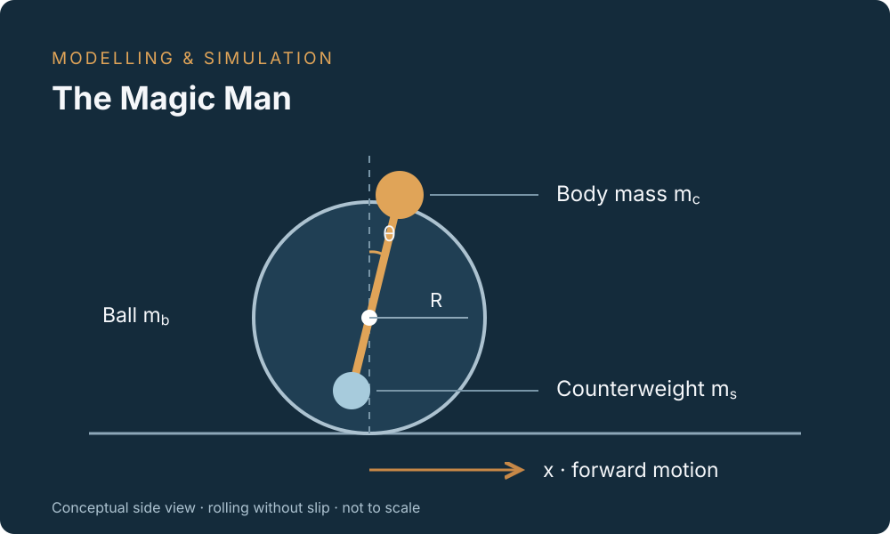
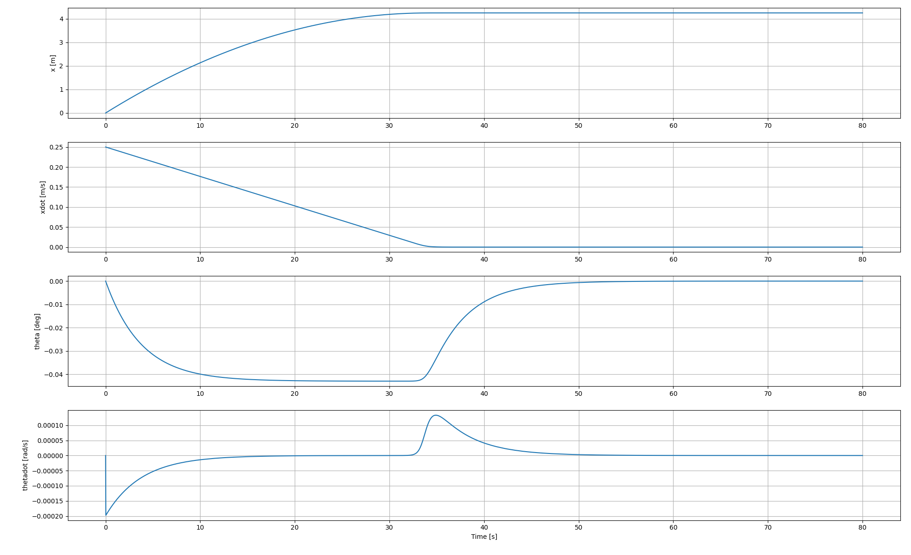
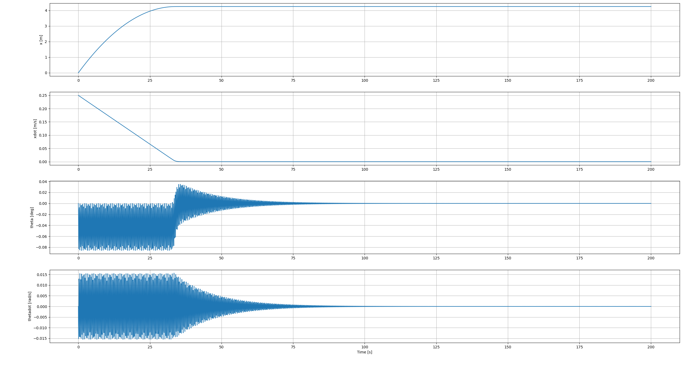
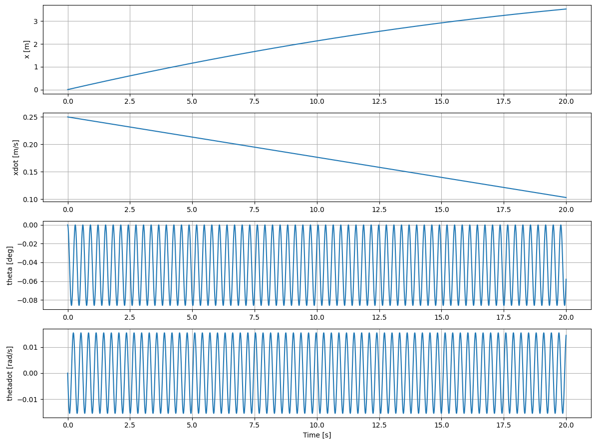

Modelling of Physical Systems • Final Project
What makes the body rock as the ball slows down?
The Magic Man is a balancing toy with a body above a rolling ball and a counterweight below its center. I used Lagrangian mechanics to model how forward motion, body rotation, gravity, and friction interact, then compared the resulting motion through Python simulations.

- Methods
- Lagrangian mechanics, state-space formulation, bond-graph representation
- Tools
- Python, NumPy, SciPy solve_ivp, Matplotlib
- Focus
- Nonlinear coupling and the effect of bearing friction
Building the model
I reduced the system to two generalized coordinates: the ball's horizontal displacement x and the body's angle from vertical θ. Motion is restricted to the vertical plane, with rotation about the lateral axis. A no-slip rolling constraint relates ball rotation to translation.
- The ball contributes translational mass and rotational inertia.
- The body and counterweight are represented by masses at fixed distances on opposite sides of the pivot.
- Rolling resistance opposes forward motion; bearing friction supplies a resisting torque in the angular equation.
From energy to equations of motion
I expressed the kinetic and potential energies in terms of x and θ, applied the Euler–Lagrange equations with generalized forces, and solved the coupled equations for the two accelerations.
M ẍ + K cos(θ) θ̈ − K sin(θ) θ̇² = Qx
K cos(θ) ẍ + I θ̈ − gK sin(θ) = Qθ
Here Qx is the generalized horizontal force and Qθ is the generalized torque. The reduced coefficients collect the mass and geometry terms:
- M = mb + mc + ms + Jb/R²
- Effective translational inertia, including the ball's rolling inertia.
- K = mcL1 − msL2
- Mass-offset coefficient coupling translation, rotation, and gravity.
- I = mcL1² + msL2²
- Rotational inertia of the two point masses about the pivot.
The subscripts b, c, and s denote the ball, body, and counterweight. Jb is the ball's moment of inertia, R is its radius, and L1 and L2 are the body and counterweight offsets.
Numerical implementation
I converted the equations into a first-order system with state [x, θ, ẋ, θ̇] and integrated it with SciPy's solve_ivp. The implementation uses smooth hyperbolic-tangent approximations for rolling and bearing friction. Matplotlib plots track displacement, forward speed, body angle, and angular velocity.
The report also sketches a bond-graph representation using force–velocity and torque–angular-velocity pairs to relate the model to an energy-based system description.
How bearing friction changes the response
The reported comparison starts from x = 0 m, θ = 0, ẋ = 0.25 m/s, and θ̇ = 0. Rolling resistance remains present in both cases. The plots below are extracted directly from the original report.
With bearing friction
The forward speed decreases toward zero while the body develops a small angular offset. Near the transition to rest, the angular response changes and then returns toward zero. The plotted response shows little oscillation compared with the free-bearing case.

Without bearing friction
Setting the bearing-friction torque to zero produces visible body oscillations while the ball slows. The angular oscillation envelope decreases later in the simulation. Rolling resistance is still active, so removing bearing friction does not make this a lossless system.

Inspect the first 20 seconds of oscillation

Key finding
The comparison shows that the assumed bearing friction strongly changes the simulated angular response. It explains why the first simulation did not show the rocking motion I initially expected.
What this project demonstrates
This project connects physical assumptions to energy equations, numerical implementation, and interpretation of a dynamic response. The friction comparison made the modelling choices visible in the results and helped me investigate an unexpected response.
Model scope and next steps
These results are simulation observations. The report uses estimated geometry and mass distribution and does not document experimental validation. Its code screenshots and plotted cases also use different time spans, so a reproducible comparison would benefit from a separate, complete script for each case.
A useful extension would be to measure the toy's motion, estimate its friction parameters, and compare the measured and simulated responses. Saving the source code, parameter sets, and raw plot data would also make it possible to regenerate consistent figures and quantify agreement.
Original project notes
The original handwritten report contains the derivation, code screenshots, simulation plots, and bond-graph sketches behind this case study.
Read the original report (PDF)